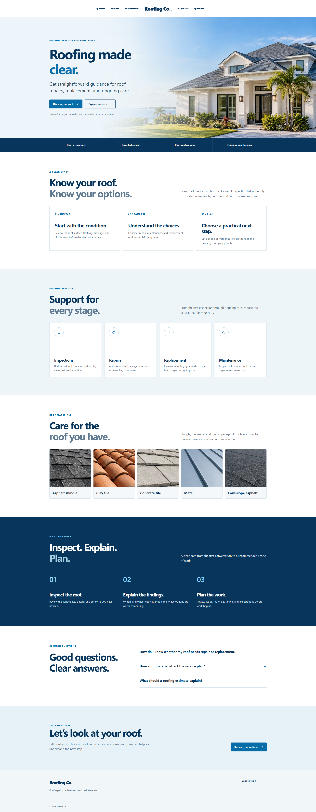
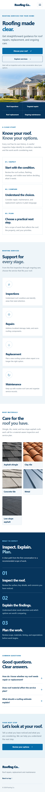

DESKTOP / HOMEPAGE


Roofing Co. test homepageOpen site ↗
WEB / WORDPRESS / THEME CASE STUDY
A clear, flexible site foundation for roofing businesses.
A custom WordPress theme concept shaped around the questions homeowners ask, with a focused service journey and responsive layouts for desktop and mobile.
02 / PRODUCT OVERVIEW
The page moves from the homeowner’s first question to service options, roof materials, a simple work process, answers, and a direct estimate path.


03 / CUSTOMER VALUE
Clear sections, familiar actions, and room to make the design fit a local contractor’s business.
Organize inspection, repair, replacement, and maintenance information in a readable sequence.
Use dedicated material visuals for asphalt shingles, clay tile, concrete tile, metal, and low-slope roofing.
Prominent estimate links and a responsive navigation system help visitors find their way through the page.
Support a custom logo, adjustable logo sizing, a centered split menu, and a compact header on scroll.
04 / BUILD SHEET
The release is a custom classic WordPress theme. The client preview is kept separate from the private theme source package.
Theme templates, setup, and WordPress integration.
Classic theme structure, menus, Customizer, and homepage pattern.
Semantic content, native details, and accessible navigation labels.
Responsive layout, branding controls, and reduced-motion support.
Small deferred behavior for the menu and compact scroll header.
WebP assets, a responsive hero source, and lazy-loaded material images.
05 / PERFORMANCE EVIDENCE
One PageSpeed Insights lab run on the populated homepage. Screenshots preserve what the report showed at that update.
Performance

Performance

Single lab run, with no CrUX field data available. The report also recorded a missing theme JavaScript asset and a missing meta description. Review the full dated log for audit notes and estimated image-delivery savings.
06 / RELEASE STAGE
BlueRoof is version 0.1.0, a design and development candidate. The public repository presents the work and evidence; the theme root files stay in a separate private package.
Before a commercial marketplace release, the theme still needs a clean-install review, compatibility checks, accessibility and translation passes, final image-rights review, complete documentation, and marketplace submission review.